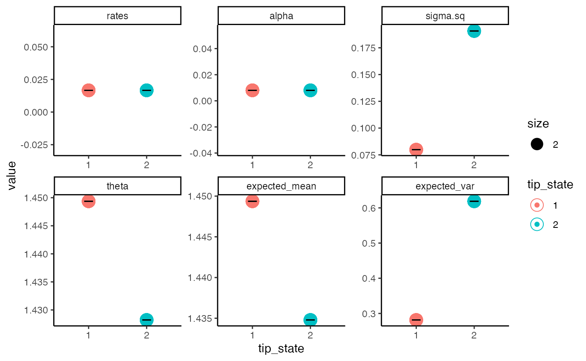
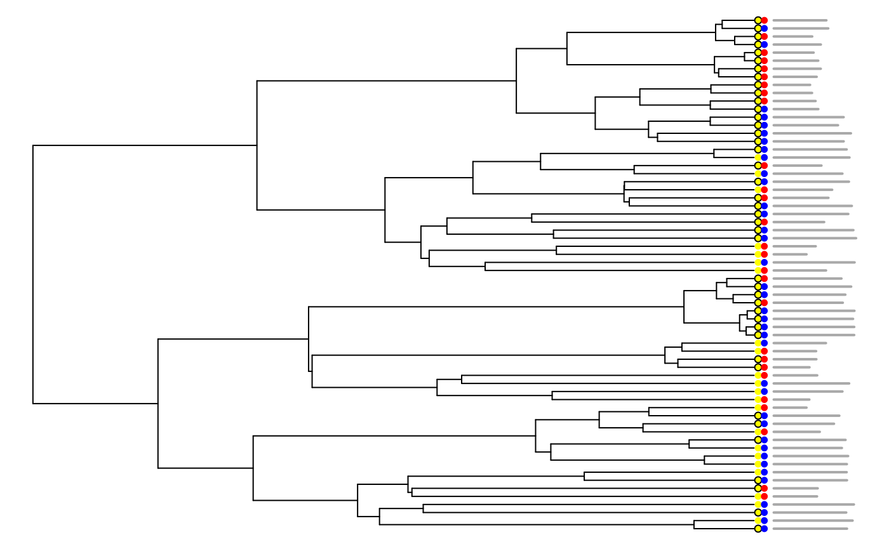

The purpose of this guide is to give a brief overview of the some of the features that the addition of the hOUwie function will provide users of OUwie and those generally interested in linking discrete and continuous datasets. In this document you will find an introduction briefly describing the motivation for the development of hOUwie, an example for the basic use of OUwie using manly default models, and an example of how to utilize the generalized framework of hOUwie to strucuture models specific to your hypotheses. If you have any questions or bug reports feel free to email me at jamesboyko21 [at] gmail.com
The major difference between this function and those previously published is that we explicitly link the discrete and continuous probabilities in a joint framework. We discuss this in depth in the associated hOUwie paper, but briefly what we do here is calculate the probability of an underlying regime painting based on both the probability of the continuous character distribution (standard for OU models) AND the probability of the discrete character distribution. Most methods to this point will ignore one of these probabilities. We then integrate over many high probability regime mappings. The effect this has in practice is that we weight mappings that are good for both discrete and continuous characters higher than alternatives because those have the highest joint probability. If one was to generate regimes using stochastic mappings, then you are generating maps ignoring the probability of the continuous character distribution so you end up with mappings that are high for the discrete character, but not the continuous. In contrast, if you were to generate mappings using an iterative approach which attempt to maximize the probability of the continuous character, you would be ignoring the probability of the discrete character’s distribution.
We will use the tworegime dataset provided by OUwie.
## Genus_species Reg X
## 1 t1 1 1.837606
## 2 t2 1 1.892257
## 3 t3 1 1.503890
## 4 t4 1 1.285335
## 5 t5 1 2.406545
## 6 t6 1 1.596806Here we can see the structure of the dataset which is species name in column one, discrete character in column two, and the continuous character in column 3. However, this is not the only type of data that is accepted in hOUwie. We allow for any number of discrete characters and states. Let’s say that our dataset contains character X (presence or absence of scent) and character Y (present or absence of colored petals). To round things out, we also have a continuous measure of flower size.
data(tworegime)
dat <- data.frame(sp = tree$tip.label, X = sample(c(0, 1), length(tree$tip.label),
replace = TRUE), Y = sample(c(0, 1), length(tree$tip.label), replace = TRUE),
FS = rnorm(length(tree$tip.label), 10, 3))
print(head(dat))## sp X Y FS
## 1 t1 0 0 6.467310
## 2 t2 0 1 7.072448
## 3 t3 1 0 13.195172
## 4 t4 0 1 10.395012
## 5 t5 0 1 11.465886
## 6 t6 1 0 4.901648Things get a little more complex when we consider the above dataset, since now we have to consider the correlation between X and Y as well as the correlation to flower size. This will be more important for people constructing their own custom models (which I recommend for anyone). Know that by default, we will structure the discrete model for X and Y as correlated.
Finally, it is also possible to include measurement error for your continuous character. That just has to be located in the last column of your data.
I also note that for the three.point algorithm to work trees are expected to be ultrametric (although in testing non-ultrametric trees seeming to work).
Basic usage for hOUwie requires the specification of your phylogeny, your trait dataset, the number of rate categories (>1 if you wish to include hidden states), your discrete character model, your continuous character model, and the number of underlying regimes to evaluate per iteration. For the purposes of this vignette (and so CRAN doesn’t yell at us), I’m not going to run any actual optimizations and just use a fixed set of parameters to evaluate the likelihood. When you use it, most likely you will not set an argument for p and just leave that out of your hOUwie function call.
p <- c(0.01670113, 0.39489947, 0.18619839, 1.67259459, 0.16817414) # my fixed set of parameters
pp_oum <- hOUwie(tree, trait, rate.cat = 1, discrete_model = "ER", continuous_model = "OUM",
nSim = 25, p = p) # you likely won't use this p argument## Negative values detected... adding 50 to the trait mean for optimization purposes
## Your phylogeny had node labels, these have been removed.
## Calculating likelihood from a set of fixed parameters.
## [1] 0.01670113 0.39489947 0.18619839 51.67259459 50.16817414
print(pp_oum)##
## Fit
## lnLTot lnLDisc lnLCont AIC AICc BIC nTaxa nPars
## -25.1665 -5.268176 -19.19106 60.333 61.36748 71.12741 64 5
##
## Legend
## 1 2
## "1" "2"
##
## Regime Rate matrix
## (1) (2)
## (1) NA 0.01670113
## (2) 0.01670113 NA
##
## OU Estimates
## (1) (2)
## alpha 0.3948995 0.3948995
## sigma2 0.1861984 0.1861984
## theta 1.6725946 0.1681741
##
##
## Half-life (another way of reporting alpha)
## (1) (2)
## 1.75525 1.75525Let’s breakdown what we see here.
Fit: You will see the total log likelihood (lnLTot), the marginal discrete likeilhood (lnLDisc), the marginal continuous likelihood (lnLCont), the Akaike Information Criterion (AIC), the sample size corrected Akaike Information Criterion (AICc), the Bayesian Information criterion (BIC), the number of taxa analyzed (nTaxa), and the number of parameters in the model (nPars). The most important numbers here are your lnLTot and the AIC (or AICc) since those are what will be used in some downstream analyses and evaluate the relative fit of this model to the data.
Legend: This is a named vector. Elements of vector (appear in the quotation marks) match the input data and above them is their corresponding state in the hOUwie model.
Regime Rate matrix: This is the model of discrete character evolution. It is a Markov model which can be read as the probability of transitioning FROM a row to a particular column. For example, to know the transition rate from state (1) to state (2) we look in the upper right hand of the matrix.
OU Estimates: The model of continuous character evolution. Alpha, sigma2, and theta are all parameters used in the OU model of which there has been plenty written about interpretation. In each column is the estimate for a particular discrete state and regime state. This model was an OUM which allows a different theta (or optima) and you can see those are the only two parameters that differ. In this case, state (2) has a lower optimum than state (1).
Half-life (another way of reporting alpha): Like it says, this is another way of reporting alpha. It’s just ln(2)/alpha. The nice thing is that, unlike alpha, this is in units of time. Like the half-life of radioactive materials, this represents the time it takes for the initial ancestral value to reach halfway to the optimum. You’ll want to look at your half-life relative to your trees age. If the half-life is much smaller than the tree age, then this is saying there is little phylogenetic signal in your dataset.
Okay, so we have run a model that asks whether the optimum of our continuous character is correlated with a discrete character and got a result. Now we need to test some alternative hypothesis. We need to see if this data can be equally explained by some distributions which do not require a correlation. Or maybe it’s not that the optimum is correlated, but rather it’s just that the rates of evolution differ between states (1) and (2).
We will run the BM1, OU1, and BMV models. Importantly, BM1 and OU1 models expect no link between the discrete and continuous characters. I.e., all of the parameters are identical for states (1) and (2). BMV on the other hand suggests that the rates of evolution in state (1) differ from those in state (2) as measure by sigma2.
p_bm1 <- c(0.01663838, 0.13324222, 1.32800027)
pp_bm1 <- hOUwie(tree, trait, rate.cat = 1, discrete_model = "ER", continuous_model = "BM1",
nSim = 25, p = p_bm1)## Negative values detected... adding 50 to the trait mean for optimization purposes
## Your phylogeny had node labels, these have been removed.
## Calculating likelihood from a set of fixed parameters.
## [1] 0.01663838 0.13324222 51.32800027
p_ou1 <- c(0.01686173, 0.16642882, 0.17165229, 1.33223112)
pp_ou1 <- hOUwie(tree, trait, rate.cat = 1, discrete_model = "ER", continuous_model = "OU1",
nSim = 25, p = p_ou1)## Negative values detected... adding 50 to the trait mean for optimization purposes
## Your phylogeny had node labels, these have been removed.
## Calculating likelihood from a set of fixed parameters.
## [1] 0.01686173 0.16642882 0.17165229 51.33223112
p_bmv <- c(0.01662943, 0.06926977, 0.19887583, 1.46411994)
pp_bmv <- hOUwie(tree, trait, rate.cat = 1, discrete_model = "ER", continuous_model = "BMV",
nSim = 25, p = p_bmv)## Negative values detected... adding 50 to the trait mean for optimization purposes
## Your phylogeny had node labels, these have been removed.
## Calculating likelihood from a set of fixed parameters.
## [1] 0.01662943 0.06926977 0.19887583 51.46411994To evaluate which model is the best, there is a function in hOUwie that will quickly summarize a set of models. But they must first be input into a list.
model_set <- list(bm1_fit = pp_bm1, ou1_fit = pp_ou1, bmv_fit = pp_bmv, oum_fit = pp_oum)
print(getModelTable(model_set))## Warning in max(x$index.mat, na.rm = TRUE): no non-missing arguments to max;
## returning -Inf
## Warning in max(x$index.mat, na.rm = TRUE): no non-missing arguments to max;
## returning -Inf
## Warning in max(x$index.mat, na.rm = TRUE): no non-missing arguments to max;
## returning -Inf
## Warning in max(x$index.mat, na.rm = TRUE): no non-missing arguments to max;
## returning -Inf## np nRateCat lnLik AIC dAIC AICwt
## bm1_fit -Inf 1 -27.22403 60.44807 6.154535 0.04142517
## ou1_fit -Inf 1 -27.18725 62.37451 8.080973 0.01581043
## bmv_fit -Inf 1 -23.14677 54.29353 0.000000 0.89888594
## oum_fit -Inf 1 -25.16650 60.33300 6.039465 0.04387846So BMV (variable sigma model) is currently the best fitting model. But, we are biasing ourselves towards finding correlation because we may be misconstruing evidence of rate heterogeneity as evidence of correlation. The problem is that all of our current null models do not allow for any rate variation or optima variation. On the other hand, correlated models do allow for rate variation linked to the focal character. So, if there is a signal of rate heterogeneity then we may choose a correlated model because it allows for rate variation even if it is not linked to the focal character (i.e., actually correlated). We can account for this with CID+ models which allow for variable parameter models without it being linked to an observed character. To do this we simply set null.model to TRUE.
p_bmv_cid <- c(291.5276, 0.005319353, 0.0001728115, 5.529171, 0.205339, 0.166633,
1.318453)
pp_bmv_cid <- hOUwie(tree, trait, rate.cat = 2, discrete_model = "ER", null.model = TRUE,
continuous_model = "BMV", nSim = 25, p = p_bmv_cid)## Negative values detected... adding 50 to the trait mean for optimization purposes
## Your phylogeny had node labels, these have been removed.
## Calculating likelihood from a set of fixed parameters.
## [1] 2.915276e+02 5.319353e-03 1.728115e-04 5.529171e+00 2.053390e-01
## [6] 1.666330e-01 5.131845e+01
p_oum_cid <- c(320.6646, 0.0163938, 0.001172179, 1.63938, 0.1977996, 0.2080072,
0.3560215, 1.518203)
pp_oum_cid <- hOUwie(tree, trait, rate.cat = 2, discrete_model = "ER", null.model = TRUE,
continuous_model = "OUM", nSim = 25, p = p_oum_cid)## Negative values detected... adding 50 to the trait mean for optimization purposes
## Your phylogeny had node labels, these have been removed.
## Calculating likelihood from a set of fixed parameters.
## [1] 3.206646e+02 1.639380e-02 1.172179e-03 1.639380e+00 1.977996e-01
## [6] 2.080072e-01 5.035602e+01 5.151820e+01One thing to note is that these rate category two models are more difficult to fit than rate category one models using the simulation approach. This is because there is a lot more mapping space to explore and with the number of stochastic maps being so low (nSim=25) for this demonstration, it’s hard to achieve a good likelihood. Nonetheless, let us create our full model set and examine our model table.
model_set <- list(bm1_fit = pp_bm1, ou1_fit = pp_ou1, bmv_fit = pp_bmv, oum_fit = pp_oum,
bmv_cid_fit = pp_bmv_cid, oum_cid_fit = pp_oum_cid)
print(getModelTable(model_set))## Warning in max(x$index.mat, na.rm = TRUE): no non-missing arguments to max;
## returning -Inf
## Warning in max(x$index.mat, na.rm = TRUE): no non-missing arguments to max;
## returning -Inf
## Warning in max(x$index.mat, na.rm = TRUE): no non-missing arguments to max;
## returning -Inf
## Warning in max(x$index.mat, na.rm = TRUE): no non-missing arguments to max;
## returning -Inf
## Warning in max(x$index.mat, na.rm = TRUE): no non-missing arguments to max;
## returning -Inf
## Warning in max(x$index.mat, na.rm = TRUE): no non-missing arguments to max;
## returning -Inf## np nRateCat lnLik AIC dAIC AICwt
## bm1_fit -Inf 1 -27.22403 60.44807 6.154535 4.141194e-02
## ou1_fit -Inf 1 -27.18725 62.37451 8.080973 1.580538e-02
## bmv_fit -Inf 1 -23.14677 54.29353 0.000000 8.985989e-01
## oum_fit -Inf 1 -25.16650 60.33300 6.039465 4.386445e-02
## bmv_cid_fit -Inf 2 -28.42047 70.84094 16.547413 2.292666e-04
## oum_cid_fit -Inf 2 -28.35437 72.70875 18.415214 9.010584e-05It’s important to account for our model selection uncertainty. Although sometimes you will find that a single model best explains the data, most of the time there will be several reasonable explanations of the data (similar AICs). To integrate over this uncertainty we conduct model averaging and utilize the averaged parameters (Burnham and Anderson 2002). This is done in getModelAvgParams. These provide parameter estimates per tip, averaging over the uncertainty in model selection (See: Caetano et al. (2018) and Vasoncelos et al. (2021) for more detail).
model_avg_pars <- getModelAvgParams(model_set)## np lnLik DiscLik ContLik BIC dBIC BICwt
## bm1_fit 3 -27.22403 -5.264855 -18.74030 66.92472 3.995652 1.159411e-01
## ou1_fit 4 -27.18725 -5.268256 -18.70012 71.01004 8.080973 1.503562e-02
## bmv_fit 4 -23.14677 -5.268170 -16.57538 62.92906 0.000000 8.548350e-01
## oum_fit 5 -25.16650 -5.268176 -19.19106 71.12741 8.198348 1.417861e-02
## bmv_cid_fit 7 -28.42047 -5.717233 -19.50771 85.95313 23.024062 8.556000e-06
## oum_cid_fit 8 -28.35437 -5.300178 -20.79948 89.97981 27.050747 1.142582e-06
## np lnLik DiscLik ContLik BIC dBIC BICwt
## bm1_fit 3 -27.22403 -5.264855 -18.74030 66.92472 3.995652 1.159411e-01
## ou1_fit 4 -27.18725 -5.268256 -18.70012 71.01004 8.080973 1.503562e-02
## bmv_fit 4 -23.14677 -5.268170 -16.57538 62.92906 0.000000 8.548350e-01
## oum_fit 5 -25.16650 -5.268176 -19.19106 71.12741 8.198348 1.417861e-02
## bmv_cid_fit 7 -28.42047 -5.717233 -19.50771 85.95313 23.024062 8.556000e-06
## oum_cid_fit 8 -28.35437 -5.300178 -20.79948 89.97981 27.050747 1.142582e-06
## [1] 1.159411e-01 1.503562e-02 8.548350e-01 1.417861e-02 8.556000e-06
## [6] 1.142582e-06
## [1] "here"
## $bm1_fit
## rates alpha sigma.sq theta expected_mean expected_var
## t1 0.01663838 0 0.1332422 1.328 1.328 0.4669193
## t2 0.01663838 0 0.1332422 1.328 1.328 0.4669193
## t3 0.01663838 0 0.1332422 1.328 1.328 0.4669193
## t4 0.01663838 0 0.1332422 1.328 1.328 0.4669193
## t5 0.01663838 0 0.1332422 1.328 1.328 0.4669193
## t6 0.01663838 0 0.1332422 1.328 1.328 0.4669193
## t7 0.01663838 0 0.1332422 1.328 1.328 0.4669193
## t8 0.01663838 0 0.1332422 1.328 1.328 0.4669193
## t9 0.01663838 0 0.1332422 1.328 1.328 0.4669193
## t10 0.01663838 0 0.1332422 1.328 1.328 0.4669193
## t11 0.01663838 0 0.1332422 1.328 1.328 0.4669193
## t12 0.01663838 0 0.1332422 1.328 1.328 0.4669193
## t13 0.01663838 0 0.1332422 1.328 1.328 0.4669193
## t14 0.01663838 0 0.1332422 1.328 1.328 0.4669193
## t15 0.01663838 0 0.1332422 1.328 1.328 0.4669193
## t16 0.01663838 0 0.1332422 1.328 1.328 0.4669193
## t17 0.01663838 0 0.1332422 1.328 1.328 0.4669193
## t18 0.01663838 0 0.1332422 1.328 1.328 0.4669193
## t19 0.01663838 0 0.1332422 1.328 1.328 0.4669193
## t20 0.01663838 0 0.1332422 1.328 1.328 0.4669193
## t21 0.01663838 0 0.1332422 1.328 1.328 0.4669193
## t22 0.01663838 0 0.1332422 1.328 1.328 0.4669193
## t23 0.01663838 0 0.1332422 1.328 1.328 0.4669193
## t24 0.01663838 0 0.1332422 1.328 1.328 0.4669193
## t25 0.01663838 0 0.1332422 1.328 1.328 0.4669193
## t26 0.01663838 0 0.1332422 1.328 1.328 0.4669193
## t27 0.01663838 0 0.1332422 1.328 1.328 0.4669193
## t28 0.01663838 0 0.1332422 1.328 1.328 0.4669193
## t29 0.01663838 0 0.1332422 1.328 1.328 0.4669193
## t30 0.01663838 0 0.1332422 1.328 1.328 0.4669193
## t31 0.01663838 0 0.1332422 1.328 1.328 0.4669193
## t32 0.01663838 0 0.1332422 1.328 1.328 0.4669193
## t33 0.01663838 0 0.1332422 1.328 1.328 0.4669193
## t34 0.01663838 0 0.1332422 1.328 1.328 0.4669193
## t35 0.01663838 0 0.1332422 1.328 1.328 0.4669193
## t36 0.01663838 0 0.1332422 1.328 1.328 0.4669193
## t37 0.01663838 0 0.1332422 1.328 1.328 0.4669193
## t38 0.01663838 0 0.1332422 1.328 1.328 0.4669193
## t39 0.01663838 0 0.1332422 1.328 1.328 0.4669193
## t40 0.01663838 0 0.1332422 1.328 1.328 0.4669193
## t41 0.01663838 0 0.1332422 1.328 1.328 0.4669193
## t42 0.01663838 0 0.1332422 1.328 1.328 0.4669193
## t43 0.01663838 0 0.1332422 1.328 1.328 0.4669193
## t44 0.01663838 0 0.1332422 1.328 1.328 0.4669193
## t45 0.01663838 0 0.1332422 1.328 1.328 0.4669193
## t46 0.01663838 0 0.1332422 1.328 1.328 0.4669193
## t47 0.01663838 0 0.1332422 1.328 1.328 0.4669193
## t48 0.01663838 0 0.1332422 1.328 1.328 0.4669193
## t49 0.01663838 0 0.1332422 1.328 1.328 0.4669193
## t50 0.01663838 0 0.1332422 1.328 1.328 0.4669193
## t51 0.01663838 0 0.1332422 1.328 1.328 0.4669193
## t52 0.01663838 0 0.1332422 1.328 1.328 0.4669193
## t53 0.01663838 0 0.1332422 1.328 1.328 0.4669193
## t54 0.01663838 0 0.1332422 1.328 1.328 0.4669193
## t55 0.01663838 0 0.1332422 1.328 1.328 0.4669193
## t56 0.01663838 0 0.1332422 1.328 1.328 0.4669193
## t57 0.01663838 0 0.1332422 1.328 1.328 0.4669193
## t58 0.01663838 0 0.1332422 1.328 1.328 0.4669193
## t59 0.01663838 0 0.1332422 1.328 1.328 0.4669193
## t60 0.01663838 0 0.1332422 1.328 1.328 0.4669193
## t61 0.01663838 0 0.1332422 1.328 1.328 0.4669193
## t62 0.01663838 0 0.1332422 1.328 1.328 0.4669193
## t63 0.01663838 0 0.1332422 1.328 1.328 0.4669193
## t64 0.01663838 0 0.1332422 1.328 1.328 0.4669193
##
## $ou1_fit
## rates alpha sigma.sq theta expected_mean expected_var
## t1 0.01686173 0.1664288 0.1716523 1.332231 1.332231 0.3550663
## t2 0.01686173 0.1664288 0.1716523 1.332231 1.332231 0.3550663
## t3 0.01686173 0.1664288 0.1716523 1.332231 1.332231 0.3550663
## t4 0.01686173 0.1664288 0.1716523 1.332231 1.332231 0.3550663
## t5 0.01686173 0.1664288 0.1716523 1.332231 1.332231 0.3550663
## t6 0.01686173 0.1664288 0.1716523 1.332231 1.332231 0.3550663
## t7 0.01686173 0.1664288 0.1716523 1.332231 1.332231 0.3550663
## t8 0.01686173 0.1664288 0.1716523 1.332231 1.332231 0.3550663
## t9 0.01686173 0.1664288 0.1716523 1.332231 1.332231 0.3550663
## t10 0.01686173 0.1664288 0.1716523 1.332231 1.332231 0.3550663
## t11 0.01686173 0.1664288 0.1716523 1.332231 1.332231 0.3550663
## t12 0.01686173 0.1664288 0.1716523 1.332231 1.332231 0.3550663
## t13 0.01686173 0.1664288 0.1716523 1.332231 1.332231 0.3550663
## t14 0.01686173 0.1664288 0.1716523 1.332231 1.332231 0.3550663
## t15 0.01686173 0.1664288 0.1716523 1.332231 1.332231 0.3550663
## t16 0.01686173 0.1664288 0.1716523 1.332231 1.332231 0.3550663
## t17 0.01686173 0.1664288 0.1716523 1.332231 1.332231 0.3550663
## t18 0.01686173 0.1664288 0.1716523 1.332231 1.332231 0.3550663
## t19 0.01686173 0.1664288 0.1716523 1.332231 1.332231 0.3550663
## t20 0.01686173 0.1664288 0.1716523 1.332231 1.332231 0.3550663
## t21 0.01686173 0.1664288 0.1716523 1.332231 1.332231 0.3550663
## t22 0.01686173 0.1664288 0.1716523 1.332231 1.332231 0.3550663
## t23 0.01686173 0.1664288 0.1716523 1.332231 1.332231 0.3550663
## t24 0.01686173 0.1664288 0.1716523 1.332231 1.332231 0.3550663
## t25 0.01686173 0.1664288 0.1716523 1.332231 1.332231 0.3550663
## t26 0.01686173 0.1664288 0.1716523 1.332231 1.332231 0.3550663
## t27 0.01686173 0.1664288 0.1716523 1.332231 1.332231 0.3550663
## t28 0.01686173 0.1664288 0.1716523 1.332231 1.332231 0.3550663
## t29 0.01686173 0.1664288 0.1716523 1.332231 1.332231 0.3550663
## t30 0.01686173 0.1664288 0.1716523 1.332231 1.332231 0.3550663
## t31 0.01686173 0.1664288 0.1716523 1.332231 1.332231 0.3550663
## t32 0.01686173 0.1664288 0.1716523 1.332231 1.332231 0.3550663
## t33 0.01686173 0.1664288 0.1716523 1.332231 1.332231 0.3550663
## t34 0.01686173 0.1664288 0.1716523 1.332231 1.332231 0.3550663
## t35 0.01686173 0.1664288 0.1716523 1.332231 1.332231 0.3550663
## t36 0.01686173 0.1664288 0.1716523 1.332231 1.332231 0.3550663
## t37 0.01686173 0.1664288 0.1716523 1.332231 1.332231 0.3550663
## t38 0.01686173 0.1664288 0.1716523 1.332231 1.332231 0.3550663
## t39 0.01686173 0.1664288 0.1716523 1.332231 1.332231 0.3550663
## t40 0.01686173 0.1664288 0.1716523 1.332231 1.332231 0.3550663
## t41 0.01686173 0.1664288 0.1716523 1.332231 1.332231 0.3550663
## t42 0.01686173 0.1664288 0.1716523 1.332231 1.332231 0.3550663
## t43 0.01686173 0.1664288 0.1716523 1.332231 1.332231 0.3550663
## t44 0.01686173 0.1664288 0.1716523 1.332231 1.332231 0.3550663
## t45 0.01686173 0.1664288 0.1716523 1.332231 1.332231 0.3550663
## t46 0.01686173 0.1664288 0.1716523 1.332231 1.332231 0.3550663
## t47 0.01686173 0.1664288 0.1716523 1.332231 1.332231 0.3550663
## t48 0.01686173 0.1664288 0.1716523 1.332231 1.332231 0.3550663
## t49 0.01686173 0.1664288 0.1716523 1.332231 1.332231 0.3550663
## t50 0.01686173 0.1664288 0.1716523 1.332231 1.332231 0.3550663
## t51 0.01686173 0.1664288 0.1716523 1.332231 1.332231 0.3550663
## t52 0.01686173 0.1664288 0.1716523 1.332231 1.332231 0.3550663
## t53 0.01686173 0.1664288 0.1716523 1.332231 1.332231 0.3550663
## t54 0.01686173 0.1664288 0.1716523 1.332231 1.332231 0.3550663
## t55 0.01686173 0.1664288 0.1716523 1.332231 1.332231 0.3550663
## t56 0.01686173 0.1664288 0.1716523 1.332231 1.332231 0.3550663
## t57 0.01686173 0.1664288 0.1716523 1.332231 1.332231 0.3550663
## t58 0.01686173 0.1664288 0.1716523 1.332231 1.332231 0.3550663
## t59 0.01686173 0.1664288 0.1716523 1.332231 1.332231 0.3550663
## t60 0.01686173 0.1664288 0.1716523 1.332231 1.332231 0.3550663
## t61 0.01686173 0.1664288 0.1716523 1.332231 1.332231 0.3550663
## t62 0.01686173 0.1664288 0.1716523 1.332231 1.332231 0.3550663
## t63 0.01686173 0.1664288 0.1716523 1.332231 1.332231 0.3550663
## t64 0.01686173 0.1664288 0.1716523 1.332231 1.332231 0.3550663
##
## $bmv_fit
## rates alpha sigma.sq theta expected_mean expected_var
## t1 0.01662943 0 0.06926977 1.46412 1.46412 0.2561530
## t2 0.01662943 0 0.06926977 1.46412 1.46412 0.2561530
## t3 0.01662943 0 0.06926977 1.46412 1.46412 0.2561530
## t4 0.01662943 0 0.06926977 1.46412 1.46412 0.2561530
## t5 0.01662943 0 0.06926977 1.46412 1.46412 0.2561530
## t6 0.01662943 0 0.06926977 1.46412 1.46412 0.2561530
## t7 0.01662943 0 0.06926977 1.46412 1.46412 0.2561530
## t8 0.01662943 0 0.06926977 1.46412 1.46412 0.2561530
## t9 0.01662943 0 0.06926977 1.46412 1.46412 0.2561530
## t10 0.01662943 0 0.06926977 1.46412 1.46412 0.2561530
## t11 0.01662943 0 0.06926977 1.46412 1.46412 0.2561530
## t12 0.01662943 0 0.06926977 1.46412 1.46412 0.2561530
## t13 0.01662943 0 0.06926977 1.46412 1.46412 0.2561530
## t14 0.01662943 0 0.06926977 1.46412 1.46412 0.2561530
## t15 0.01662943 0 0.06926977 1.46412 1.46412 0.2561530
## t16 0.01662943 0 0.06926977 1.46412 1.46412 0.2561530
## t17 0.01662943 0 0.06926977 1.46412 1.46412 0.2561530
## t18 0.01662943 0 0.06926977 1.46412 1.46412 0.2561530
## t19 0.01662943 0 0.06926977 1.46412 1.46412 0.2561530
## t20 0.01662943 0 0.06926977 1.46412 1.46412 0.2561530
## t21 0.01662943 0 0.06926977 1.46412 1.46412 0.2561530
## t22 0.01662943 0 0.06926977 1.46412 1.46412 0.2561530
## t23 0.01662943 0 0.06926977 1.46412 1.46412 0.2561530
## t24 0.01662943 0 0.06926977 1.46412 1.46412 0.2561530
## t25 0.01662943 0 0.06926977 1.46412 1.46412 0.2561530
## t26 0.01662943 0 0.06926977 1.46412 1.46412 0.2561530
## t27 0.01662943 0 0.06926977 1.46412 1.46412 0.2561530
## t28 0.01662943 0 0.06926977 1.46412 1.46412 0.2561530
## t29 0.01662943 0 0.06926977 1.46412 1.46412 0.2561530
## t30 0.01662943 0 0.06926977 1.46412 1.46412 0.2561530
## t31 0.01662943 0 0.06926977 1.46412 1.46412 0.2561530
## t32 0.01662943 0 0.06926977 1.46412 1.46412 0.2561530
## t33 0.01662943 0 0.19887583 1.46412 1.46412 0.6504027
## t34 0.01662943 0 0.19887583 1.46412 1.46412 0.6504027
## t35 0.01662943 0 0.19887583 1.46412 1.46412 0.6504027
## t36 0.01662943 0 0.19887583 1.46412 1.46412 0.6504027
## t37 0.01662943 0 0.19887583 1.46412 1.46412 0.6504027
## t38 0.01662943 0 0.19887583 1.46412 1.46412 0.6504027
## t39 0.01662943 0 0.19887583 1.46412 1.46412 0.6504027
## t40 0.01662943 0 0.19887583 1.46412 1.46412 0.6504027
## t41 0.01662943 0 0.19887583 1.46412 1.46412 0.6504027
## t42 0.01662943 0 0.19887583 1.46412 1.46412 0.6504027
## t43 0.01662943 0 0.19887583 1.46412 1.46412 0.6504027
## t44 0.01662943 0 0.19887583 1.46412 1.46412 0.6504027
## t45 0.01662943 0 0.19887583 1.46412 1.46412 0.6504027
## t46 0.01662943 0 0.19887583 1.46412 1.46412 0.6504027
## t47 0.01662943 0 0.19887583 1.46412 1.46412 0.6504027
## t48 0.01662943 0 0.19887583 1.46412 1.46412 0.6504027
## t49 0.01662943 0 0.19887583 1.46412 1.46412 0.6504027
## t50 0.01662943 0 0.19887583 1.46412 1.46412 0.6504027
## t51 0.01662943 0 0.19887583 1.46412 1.46412 0.6504027
## t52 0.01662943 0 0.19887583 1.46412 1.46412 0.6504027
## t53 0.01662943 0 0.19887583 1.46412 1.46412 0.6504027
## t54 0.01662943 0 0.19887583 1.46412 1.46412 0.6504027
## t55 0.01662943 0 0.19887583 1.46412 1.46412 0.6504027
## t56 0.01662943 0 0.19887583 1.46412 1.46412 0.6504027
## t57 0.01662943 0 0.19887583 1.46412 1.46412 0.6504027
## t58 0.01662943 0 0.19887583 1.46412 1.46412 0.6504027
## t59 0.01662943 0 0.19887583 1.46412 1.46412 0.6504027
## t60 0.01662943 0 0.19887583 1.46412 1.46412 0.6504027
## t61 0.01662943 0 0.19887583 1.46412 1.46412 0.6504027
## t62 0.01662943 0 0.19887583 1.46412 1.46412 0.6504027
## t63 0.01662943 0 0.19887583 1.46412 1.46412 0.6504027
## t64 0.01662943 0 0.19887583 1.46412 1.46412 0.6504027
##
## $oum_fit
## rates alpha sigma.sq theta expected_mean expected_var
## t1 0.01670113 0.3948995 0.1861984 1.6725946 1.6725839 0.2209471
## t2 0.01670113 0.3948995 0.1861984 1.6725946 1.6725839 0.2209471
## t3 0.01670113 0.3948995 0.1861984 1.6725946 1.6725839 0.2209471
## t4 0.01670113 0.3948995 0.1861984 1.6725946 1.6725839 0.2209471
## t5 0.01670113 0.3948995 0.1861984 1.6725946 1.6725839 0.2209471
## t6 0.01670113 0.3948995 0.1861984 1.6725946 1.6725839 0.2209471
## t7 0.01670113 0.3948995 0.1861984 1.6725946 1.6725839 0.2209471
## t8 0.01670113 0.3948995 0.1861984 1.6725946 1.6725839 0.2209471
## t9 0.01670113 0.3948995 0.1861984 1.6725946 1.6725839 0.2209471
## t10 0.01670113 0.3948995 0.1861984 1.6725946 1.6725839 0.2209471
## t11 0.01670113 0.3948995 0.1861984 1.6725946 1.6725839 0.2209471
## t12 0.01670113 0.3948995 0.1861984 1.6725946 1.6725839 0.2209471
## t13 0.01670113 0.3948995 0.1861984 1.6725946 1.6725839 0.2209471
## t14 0.01670113 0.3948995 0.1861984 1.6725946 1.6725839 0.2209471
## t15 0.01670113 0.3948995 0.1861984 1.6725946 1.6725839 0.2209471
## t16 0.01670113 0.3948995 0.1861984 1.6725946 1.6725839 0.2209471
## t17 0.01670113 0.3948995 0.1861984 1.6725946 1.6725839 0.2209471
## t18 0.01670113 0.3948995 0.1861984 1.6725946 1.6725839 0.2209471
## t19 0.01670113 0.3948995 0.1861984 1.6725946 1.6725839 0.2209471
## t20 0.01670113 0.3948995 0.1861984 1.6725946 1.6725839 0.2209471
## t21 0.01670113 0.3948995 0.1861984 1.6725946 1.6725839 0.2209471
## t22 0.01670113 0.3948995 0.1861984 1.6725946 1.6725839 0.2209471
## t23 0.01670113 0.3948995 0.1861984 1.6725946 1.6725839 0.2209471
## t24 0.01670113 0.3948995 0.1861984 1.6725946 1.6725839 0.2209471
## t25 0.01670113 0.3948995 0.1861984 1.6725946 1.6725839 0.2209471
## t26 0.01670113 0.3948995 0.1861984 1.6725946 1.6725839 0.2209471
## t27 0.01670113 0.3948995 0.1861984 1.6725946 1.6725839 0.2209471
## t28 0.01670113 0.3948995 0.1861984 1.6725946 1.6725839 0.2209471
## t29 0.01670113 0.3948995 0.1861984 1.6725946 1.6725839 0.2209471
## t30 0.01670113 0.3948995 0.1861984 1.6725946 1.6725839 0.2209471
## t31 0.01670113 0.3948995 0.1861984 1.6725946 1.6725839 0.2209471
## t32 0.01670113 0.3948995 0.1861984 1.6725946 1.6725839 0.2209471
## t33 0.01670113 0.3948995 0.1861984 0.1681741 0.6355941 0.2209471
## t34 0.01670113 0.3948995 0.1861984 0.1681741 0.6355941 0.2209471
## t35 0.01670113 0.3948995 0.1861984 0.1681741 0.6355941 0.2209471
## t36 0.01670113 0.3948995 0.1861984 0.1681741 0.6355941 0.2209471
## t37 0.01670113 0.3948995 0.1861984 0.1681741 0.6355941 0.2209471
## t38 0.01670113 0.3948995 0.1861984 0.1681741 0.6355941 0.2209471
## t39 0.01670113 0.3948995 0.1861984 0.1681741 0.6355941 0.2209471
## t40 0.01670113 0.3948995 0.1861984 0.1681741 0.6355941 0.2209471
## t41 0.01670113 0.3948995 0.1861984 0.1681741 0.6355941 0.2209471
## t42 0.01670113 0.3948995 0.1861984 0.1681741 0.6355941 0.2209471
## t43 0.01670113 0.3948995 0.1861984 0.1681741 0.6355941 0.2209471
## t44 0.01670113 0.3948995 0.1861984 0.1681741 0.6355941 0.2209471
## t45 0.01670113 0.3948995 0.1861984 0.1681741 0.6355941 0.2209471
## t46 0.01670113 0.3948995 0.1861984 0.1681741 0.6355941 0.2209471
## t47 0.01670113 0.3948995 0.1861984 0.1681741 0.6355941 0.2209471
## t48 0.01670113 0.3948995 0.1861984 0.1681741 0.6355941 0.2209471
## t49 0.01670113 0.3948995 0.1861984 0.1681741 0.6355941 0.2209471
## t50 0.01670113 0.3948995 0.1861984 0.1681741 0.6355941 0.2209471
## t51 0.01670113 0.3948995 0.1861984 0.1681741 0.6355941 0.2209471
## t52 0.01670113 0.3948995 0.1861984 0.1681741 0.6355941 0.2209471
## t53 0.01670113 0.3948995 0.1861984 0.1681741 0.6355941 0.2209471
## t54 0.01670113 0.3948995 0.1861984 0.1681741 0.6355941 0.2209471
## t55 0.01670113 0.3948995 0.1861984 0.1681741 0.6355941 0.2209471
## t56 0.01670113 0.3948995 0.1861984 0.1681741 0.6355941 0.2209471
## t57 0.01670113 0.3948995 0.1861984 0.1681741 0.6355941 0.2209471
## t58 0.01670113 0.3948995 0.1861984 0.1681741 0.6355941 0.2209471
## t59 0.01670113 0.3948995 0.1861984 0.1681741 0.6355941 0.2209471
## t60 0.01670113 0.3948995 0.1861984 0.1681741 0.6355941 0.2209471
## t61 0.01670113 0.3948995 0.1861984 0.1681741 0.6355941 0.2209471
## t62 0.01670113 0.3948995 0.1861984 0.1681741 0.6355941 0.2209471
## t63 0.01670113 0.3948995 0.1861984 0.1681741 0.6355941 0.2209471
## t64 0.01670113 0.3948995 0.1861984 0.1681741 0.6355941 0.2209471
##
## $bmv_cid_fit
## rates alpha sigma.sq theta expected_mean expected_var
## t1 0.005492165 0 0.166633 1.318453 1.318453 0.5839302
## t2 0.005492165 0 0.166633 1.318453 1.318453 0.5839302
## t3 0.005492165 0 0.166633 1.318453 1.318453 0.5839302
## t4 0.005492165 0 0.166633 1.318453 1.318453 0.5839302
## t5 0.005492165 0 0.166633 1.318453 1.318453 0.5839302
## t6 0.005492165 0 0.166633 1.318453 1.318453 0.5839302
## t7 0.005492165 0 0.166633 1.318453 1.318453 0.5839302
## t8 0.005492165 0 0.166633 1.318453 1.318453 0.5839302
## t9 0.005492165 0 0.166633 1.318453 1.318453 0.5839302
## t10 0.005492165 0 0.166633 1.318453 1.318453 0.5839302
## t11 0.005492165 0 0.166633 1.318453 1.318453 0.5839302
## t12 0.005492165 0 0.166633 1.318453 1.318453 0.5839302
## t13 0.005492165 0 0.166633 1.318453 1.318453 0.5839302
## t14 0.005492165 0 0.166633 1.318453 1.318453 0.5839302
## t15 0.005492165 0 0.166633 1.318453 1.318453 0.5839302
## t16 0.005492165 0 0.166633 1.318453 1.318453 0.5839302
## t17 0.005492165 0 0.166633 1.318453 1.318453 0.5839302
## t18 0.005492165 0 0.166633 1.318453 1.318453 0.5839302
## t19 0.005492165 0 0.166633 1.318453 1.318453 0.5839302
## t20 0.005492165 0 0.166633 1.318453 1.318453 0.5839302
## t21 0.005492165 0 0.166633 1.318453 1.318453 0.5839302
## t22 0.005492165 0 0.166633 1.318453 1.318453 0.5839302
## t23 0.005492165 0 0.166633 1.318453 1.318453 0.5839302
## t24 0.005492165 0 0.166633 1.318453 1.318453 0.5839302
## t25 0.005492165 0 0.166633 1.318453 1.318453 0.5839302
## t26 0.005492165 0 0.166633 1.318453 1.318453 0.5839302
## t27 0.005492165 0 0.166633 1.318453 1.318453 0.5839302
## t28 0.005492165 0 0.166633 1.318453 1.318453 0.5839302
## t29 0.005492165 0 0.166633 1.318453 1.318453 0.5839302
## t30 0.005492165 0 0.166633 1.318453 1.318453 0.5839302
## t31 0.005492165 0 0.166633 1.318453 1.318453 0.5839302
## t32 0.005492165 0 0.166633 1.318453 1.318453 0.5839302
## t33 0.005492165 0 0.166633 1.318453 1.318453 0.5839302
## t34 0.005492165 0 0.166633 1.318453 1.318453 0.5839302
## t35 0.005492165 0 0.166633 1.318453 1.318453 0.5839302
## t36 0.005492165 0 0.166633 1.318453 1.318453 0.5839302
## t37 0.005492165 0 0.166633 1.318453 1.318453 0.5839302
## t38 0.005492165 0 0.166633 1.318453 1.318453 0.5839302
## t39 0.005492165 0 0.166633 1.318453 1.318453 0.5839302
## t40 0.005492165 0 0.166633 1.318453 1.318453 0.5839302
## t41 0.005492165 0 0.166633 1.318453 1.318453 0.5839302
## t42 0.005492165 0 0.166633 1.318453 1.318453 0.5839302
## t43 0.005492165 0 0.166633 1.318453 1.318453 0.5839302
## t44 0.005492165 0 0.166633 1.318453 1.318453 0.5839302
## t45 0.005492165 0 0.166633 1.318453 1.318453 0.5839302
## t46 0.005492165 0 0.166633 1.318453 1.318453 0.5839302
## t47 0.005492165 0 0.166633 1.318453 1.318453 0.5839302
## t48 0.005492165 0 0.166633 1.318453 1.318453 0.5839302
## t49 0.005492165 0 0.166633 1.318453 1.318453 0.5839302
## t50 0.005492165 0 0.166633 1.318453 1.318453 0.5839302
## t51 0.005492165 0 0.166633 1.318453 1.318453 0.5839302
## t52 0.005492165 0 0.166633 1.318453 1.318453 0.5839302
## t53 0.005492165 0 0.166633 1.318453 1.318453 0.5839302
## t54 0.005492165 0 0.166633 1.318453 1.318453 0.5839302
## t55 0.005492165 0 0.166633 1.318453 1.318453 0.5839302
## t56 0.005492165 0 0.166633 1.318453 1.318453 0.5839302
## t57 0.005492165 0 0.166633 1.318453 1.318453 0.5839302
## t58 0.005492165 0 0.166633 1.318453 1.318453 0.5839302
## t59 0.005492165 0 0.166633 1.318453 1.318453 0.5839302
## t60 0.005492165 0 0.166633 1.318453 1.318453 0.5839302
## t61 0.005492165 0 0.166633 1.318453 1.318453 0.5839302
## t62 0.005492165 0 0.166633 1.318453 1.318453 0.5839302
## t63 0.005492165 0 0.166633 1.318453 1.318453 0.5839302
## t64 0.005492165 0 0.166633 1.318453 1.318453 0.5839302
##
## $oum_cid_fit
## rates alpha sigma.sq theta expected_mean expected_var
## t1 0.01756598 0.1977996 0.2080072 1.518203 1.518203 0.3943521
## t2 0.01756598 0.1977996 0.2080072 1.518203 1.518203 0.3943521
## t3 0.01756598 0.1977996 0.2080072 1.518203 1.518203 0.3943521
## t4 0.01756598 0.1977996 0.2080072 1.518203 1.518203 0.3943521
## t5 0.01756598 0.1977996 0.2080072 1.518203 1.518203 0.3943521
## t6 0.01756598 0.1977996 0.2080072 1.518203 1.518203 0.3943521
## t7 0.01756598 0.1977996 0.2080072 1.518203 1.518203 0.3943521
## t8 0.01756598 0.1977996 0.2080072 1.518203 1.518203 0.3943521
## t9 0.01756598 0.1977996 0.2080072 1.518203 1.518203 0.3943521
## t10 0.01756598 0.1977996 0.2080072 1.518203 1.518203 0.3943521
## t11 0.01756598 0.1977996 0.2080072 1.518203 1.518203 0.3943521
## t12 0.01756598 0.1977996 0.2080072 1.518203 1.518203 0.3943521
## t13 0.01756598 0.1977996 0.2080072 1.518203 1.518203 0.3943521
## t14 0.01756598 0.1977996 0.2080072 1.518203 1.518203 0.3943521
## t15 0.01756598 0.1977996 0.2080072 1.518203 1.518203 0.3943521
## t16 0.01756598 0.1977996 0.2080072 1.518203 1.518203 0.3943521
## t17 0.01756598 0.1977996 0.2080072 1.518203 1.518203 0.3943521
## t18 0.01756598 0.1977996 0.2080072 1.518203 1.518203 0.3943521
## t19 0.01756651 0.1977996 0.2080072 1.518203 1.518203 0.3943521
## t20 0.01756598 0.1977996 0.2080072 1.518203 1.518203 0.3943521
## t21 0.01756598 0.1977996 0.2080072 1.518203 1.518203 0.3943521
## t22 0.01756598 0.1977996 0.2080072 1.518203 1.518203 0.3943521
## t23 0.01756598 0.1977996 0.2080072 1.518203 1.518203 0.3943521
## t24 0.01756598 0.1977996 0.2080072 1.518203 1.518203 0.3943521
## t25 0.01756598 0.1977996 0.2080072 1.518203 1.518203 0.3943521
## t26 0.01756598 0.1977996 0.2080072 1.518203 1.518203 0.3943521
## t27 0.01756598 0.1977996 0.2080072 1.518203 1.518203 0.3943521
## t28 0.01756598 0.1977996 0.2080072 1.518203 1.518203 0.3943521
## t29 0.01756598 0.1977996 0.2080072 1.518203 1.518203 0.3943521
## t30 0.01756598 0.1977996 0.2080072 1.518203 1.518203 0.3943521
## t31 0.01756598 0.1977996 0.2080072 1.518203 1.518203 0.3943521
## t32 0.01756598 0.1977996 0.2080072 1.518203 1.518203 0.3943521
## t33 0.01756598 0.1977996 0.2080072 1.518203 1.518203 0.3943521
## t34 0.01756598 0.1977996 0.2080072 1.518203 1.518203 0.3943521
## t35 0.01756598 0.1977996 0.2080072 1.518203 1.518203 0.3943521
## t36 0.01756598 0.1977996 0.2080072 1.518203 1.518203 0.3943521
## t37 0.01756598 0.1977996 0.2080072 1.518203 1.518203 0.3943521
## t38 0.01756598 0.1977996 0.2080072 1.518203 1.518203 0.3943521
## t39 0.01756598 0.1977996 0.2080072 1.518203 1.518203 0.3943521
## t40 0.01756598 0.1977996 0.2080072 1.518203 1.518203 0.3943521
## t41 0.01756598 0.1977996 0.2080072 1.518203 1.518203 0.3943521
## t42 0.01756598 0.1977996 0.2080072 1.518203 1.518203 0.3943521
## t43 0.01756598 0.1977996 0.2080072 1.518203 1.518203 0.3943521
## t44 0.01756598 0.1977996 0.2080072 1.518203 1.518203 0.3943521
## t45 0.01756598 0.1977996 0.2080072 1.518203 1.518203 0.3943521
## t46 0.01756598 0.1977996 0.2080072 1.518203 1.518203 0.3943521
## t47 0.01756598 0.1977996 0.2080072 1.518203 1.518203 0.3943521
## t48 0.01756598 0.1977996 0.2080072 1.518203 1.518203 0.3943521
## t49 0.01756598 0.1977996 0.2080072 1.518203 1.518203 0.3943521
## t50 0.01756598 0.1977996 0.2080072 1.518203 1.518203 0.3943521
## t51 0.01756598 0.1977996 0.2080072 1.518203 1.518203 0.3943521
## t52 0.01756598 0.1977996 0.2080072 1.518203 1.518203 0.3943521
## t53 0.01756598 0.1977996 0.2080072 1.518203 1.518203 0.3943521
## t54 0.01756598 0.1977996 0.2080072 1.518203 1.518203 0.3943521
## t55 0.01756598 0.1977996 0.2080072 1.518203 1.518203 0.3943521
## t56 0.01756598 0.1977996 0.2080072 1.518203 1.518203 0.3943521
## t57 0.01756598 0.1977996 0.2080072 1.518203 1.518203 0.3943521
## t58 0.01756598 0.1977996 0.2080072 1.518203 1.518203 0.3943521
## t59 0.01756598 0.1977996 0.2080072 1.518203 1.518203 0.3943521
## t60 0.01756598 0.1977996 0.2080072 1.518203 1.518203 0.3943521
## t61 0.01756598 0.1977996 0.2080072 1.518203 1.518203 0.3943521
## t62 0.01756598 0.1977996 0.2080072 1.518203 1.518203 0.3943521
## t63 0.01756598 0.1977996 0.2080072 1.518203 1.518203 0.3943521
## t64 0.01756598 0.1977996 0.2080072 1.518203 1.518203 0.3943521## rates alpha sigma.sq theta expected_mean expected_var
## t1 0.01663488 0.008101711 0.07988507 1.44931 1.44931 0.2815805
## t2 0.01663488 0.008101711 0.07988507 1.44931 1.44931 0.2815805
## t3 0.01663488 0.008101711 0.07988507 1.44931 1.44931 0.2815805
## t4 0.01663488 0.008101711 0.07988507 1.44931 1.44931 0.2815805
## t5 0.01663488 0.008101711 0.07988507 1.44931 1.44931 0.2815805
## t6 0.01663488 0.008101711 0.07988507 1.44931 1.44931 0.2815805
## tip_state
## t1 1
## t2 1
## t3 1
## t4 1
## t5 1
## t6 1We can then summarize these results using reshape2 and ggplot2.
plot_data <- melt(model_avg_pars)## Using tip_state as id variables
ggplot(plot_data, aes(x = tip_state, y = value, color = tip_state)) + geom_point(size = 5,
shape = 21) + stat_summary(fun = mean, geom = "point", aes(group = 1, size = 2)) +
stat_summary(fun.data = "mean_se", geom = "errorbar", aes(group = 1), width = 0.15,
color = "black") + theme_classic() + facet_wrap(~variable, scales = "free")
This takes all tip rate estimates and averages the results for the observed state. What we see is that even though our best model (BMV) only predicts a difference between estimates of sigma.sq, by incorporating information from other reasonably good models there is a slight difference in the predicted optima (theta) as well.
Up until this point we have been dealing with one of several default models for both the discrete and continuous character. However, in my opinion, the more exciting way to approach using hOUwie is by customizing your discrete and continuous models to test a set of interesting hypotheses. This is what we will dive into now, as well as some of the more technical options available to users.
Say we are interested in whether optimal flower size (continuous variable) is correlated with flower scent (Scent = 0 or 1) or whether flower size is correlated with flower color (Color = red or blue). We have a few things to consider as alternative hypotheses. First, we will need to structure a model such that the optimum flower size is dependent on flower scent (M1). We will need a model where the optimum flower size is dependent on flower color (M2). We could also have a model where both flower scent and flower color correlate with the optimal flower size (M3). Then, of course we will need some “null” models as well. These are models in which flower size is independent of our focal discrete characters. We will have the standard null models (OU1 and BM1) where there is no heterogeneity in flower size evolution, and we will run some CID+ models that allow for rate variation in flower size evolution that is independent of our focal discrete characters.
I will also note that you can adjust the discrete character evolution as well. More details about this are given in the corHMM vignette and help functions. But essentially, we could ask the question of whether flower color and flower scent are correlated. Structuring our discrete models in particular ways can assess that question. For our purposes here though, we won’t delve into that.
Let’s take a look at some hypothetical data.
## sp scent color size
## 1 t1 1 blue 6.143631
## 2 t2 1 red 5.068725
## 3 t3 1 blue 9.061639
## 4 t4 0 blue 10.021362
## 5 t5 0 red 5.410799
## 6 t6 1 red 5.495283And if we plot our data…
plot(tree, show.tip.label = FALSE, x.lim = c(0, 4), no.margin = TRUE)
tiplabels(pch = 21, col = flower_data$scent, cex = 0.75, offset = 0.02)
tiplabels(pch = 16, col = flower_data$color, cex = 0.75, offset = 0.05)
proportions <- dat$data$x/max(dat$data$x)
plotting_matrix <- matrix(c(rep(3.6, length(tree$tip.label)), 1:length(tree$tip.label),
3.6 + (0.4 * proportions), 1:length(tree$tip.label)), ncol = 4)
for (i in 1:64) {
lines(t(matrix(plotting_matrix[i, ], 2, 2)), lwd = 2, col = "darkgrey")
}
So it seems that there may be some correlation between flower color and optimal flower size, with blue flowers looking a little bit larger than red flowers. But, let’s create our model set and see what the models say.
There are several functions which can aid you create a custom set of models. Here we will be focusing on custom continuous models, but similar things can be done for discrete models (for discrete models see the corHMM vignette). Let’s start with the our simplest model BM1.
ou1_structure <- getOUParamStructure(model = "OU1", nObsState = 4, rate.cat = 1,
null.model = FALSE)
print(ou1_structure)## (1) (2) (3) (4)
## alpha 1 1 1 1
## sigma2 2 2 2 2
## theta 3 3 3 3The function we use is called getOUParamStructure. We indicate the model we want (OU1), the number of observed states (4 in this case), the number of rate categories, and a TRUE or FALSE as to whether this is a null model. Null model for this argument really refers to a model with character independent rate heterogeneity. OU1 uses the same rate and optima throughout the phylogeny, so we set this argument to FALSE.
Each row represents a particular parameter and each column represents a state. All of the sigma squared, alpha, and theta values are the same for each character as is theta.
We can then use this structure in our hOUwie function call as a custom input model.
p_ou1 <- c(1, 3, 1.5, 7.5) # note: not the mle
ou1_fit <- hOUwie(tree, flower_data, rate.cat = 1, discrete_model = "ER", continuous_model = ou1_structure,
nSim = 50, p = p_ou1)## Your phylogeny had node labels, these have been removed.
## Calculating likelihood from a set of fixed parameters.
## [1] 1.0 3.0 1.5 7.5
print(ou1_fit)##
## Fit
## lnLTot lnLDisc lnLCont AIC AICc BIC nTaxa nPars
## -550.7834 -115.9272 -430.9442 1109.567 1110.245 1118.202 64 4
##
## Legend
## 1 2 3 4
## "0_blue" "1_blue" "0_red" "1_red"
##
## Regime Rate matrix
## (1) (2) (3) (4)
## (1) NA 1 1 NA
## (2) 1 NA NA 1
## (3) 1 NA NA 1
## (4) NA 1 1 NA
##
## OU Estimates
## (1) (2) (3) (4)
## alpha 3.0 3.0 3.0 3.0
## sigma2 1.5 1.5 1.5 1.5
## theta 7.5 7.5 7.5 7.5
##
##
## Half-life (another way of reporting alpha)
## (1) (2) (3) (4)
## 0.2310491 0.2310491 0.2310491 0.2310491At this point you may ask, why would I create a custom model when I could have simply set “OU1” into the continuous_model argument and been done already? The answer is that this way provides much greater flexibility. The getOUParamStructure function is just a quick way to give you a matrix in the hOUwie format that you can then customize.
For example, let’s take the ou1_structure and structure a model to match our first hypothesis. M1 was supposed to test whether flower size is dependent on flower scent. This means changing the parameters of ou1 to match differing optima for flower scent present and flower scent absent. Now, the matrix currently is in the form (1), (2), (3), (4). How do we know which state is which? Honestly, the most robust way is to run a hOUwie model with a fixed set of parameters and look at the legend output. Alternatively, you can use a function from corHMM that hOUwie uses internally called getStateMat4Dat. The only catch for this function is that you have to remove the continuous character from your data.frame since it’s used for discrete characers.
print(getStateMat4Dat(flower_data[, -4])$legend)## [1] "scent|color"Nonetheless, we now have our legend and can see that flower scent is abscent (0) for states 1 and 2, and present (1) for states 3 and 4.
m1_structure <- ou1_structure
print("Original OU1 structure")## [1] "Original OU1 structure"
print(m1_structure)## (1) (2) (3) (4)
## alpha 1 1 1 1
## sigma2 2 2 2 2
## theta 3 3 3 3
m1_structure[3, ] <- c(3, 3, 4, 4)
print("Modified to allow differing optima based on flower scent")## [1] "Modified to allow differing optima based on flower scent"
print(m1_structure)## (1) (2) (3) (4)
## alpha 1 1 1 1
## sigma2 2 2 2 2
## theta 3 3 4 4We can do the same thing for M2 and M3 which predicted that the optimal flower sized depends on flower color and it depends on the combination of flower color and scent respectively.
m3_structure <- m2_structure <- ou1_structure
print("Original OU1 structure")## [1] "Original OU1 structure"
print(m1_structure)## (1) (2) (3) (4)
## alpha 1 1 1 1
## sigma2 2 2 2 2
## theta 3 3 4 4## [1] "M2: Depends on flower color"
print(m2_structure)## (1) (2) (3) (4)
## alpha 1 1 1 1
## sigma2 2 2 2 2
## theta 3 4 3 4## [1] "M3: Depends on flower scent and flower color"
print(m3_structure)## (1) (2) (3) (4)
## alpha 1 1 1 1
## sigma2 2 2 2 2
## theta 3 4 5 6Each of these models can be fit and added to our growing model set.
p_m1 <- c(1, 1, 1.5, 5, 10) # note: not the mle
m1_fit <- hOUwie(tree, flower_data, rate.cat = 1, discrete_model = "ER", continuous_model = m1_structure,
nSim = 50, p = p_m1)## Your phylogeny had node labels, these have been removed.
## Calculating likelihood from a set of fixed parameters.
## [1] 1.0 1.0 1.5 5.0 10.0
p_m2 <- c(1, 3, 1.5, 5, 10) # note: not the mle
m2_fit <- hOUwie(tree, flower_data, rate.cat = 1, discrete_model = "ER", continuous_model = m2_structure,
nSim = 50, p = p_m1, adaptive_sampling = TRUE)## Your phylogeny had node labels, these have been removed.
## Calculating likelihood from a set of fixed parameters.
## [1] 1.0 1.0 1.5 5.0 10.0
p_m3 <- c(1, 3, 2, 5, 11, 6, 12) # note: not the mle
m3_fit <- hOUwie(tree, flower_data, rate.cat = 1, discrete_model = "ER", continuous_model = m3_structure,
nSim = 50, p = p_m3)## Your phylogeny had node labels, these have been removed.
## Calculating likelihood from a set of fixed parameters.
## [1] 1 3 2 5 11 6 12Let’s put them all in a list and see what the relative fits of each model was.
print(getModelTable(list(ou1 = ou1_fit, m1 = m1_fit, m2 = m2_fit, m3 = m3_fit)))## Warning in max(x$index.mat, na.rm = TRUE): no non-missing arguments to max;
## returning -Inf
## Warning in max(x$index.mat, na.rm = TRUE): no non-missing arguments to max;
## returning -Inf
## Warning in max(x$index.mat, na.rm = TRUE): no non-missing arguments to max;
## returning -Inf
## Warning in max(x$index.mat, na.rm = TRUE): no non-missing arguments to max;
## returning -Inf## np nRateCat lnLik AIC dAIC AICwt
## ou1 -Inf 1 -550.7834 1109.5669 688.8031 2.681103e-150
## m1 -Inf 1 -293.1567 596.3133 175.5495 7.584263e-39
## m2 -Inf 1 -205.3819 420.7638 0.0000 1.000000e+00
## m3 -Inf 1 -303.5883 621.1767 200.4128 3.026242e-44So based on these results we could conclude fairly substantial evidence for model 2 which suggested that the optimum of flower size is correlated with flower color. Obviously, for a real analysis we would need to add in more character independent null models for a robust test. And since our state space is increased, we should also consider running with a higher number of stochastic maps per iteration (nSim = 100 at least).
More to be added here as time goes on.
A couple of tips for troubleshooting any issues. Try using fixed parameters (the p argument) and seeing if it is able to run then. Try using a lower number of underlying regimes for a quick check (nSim = 10) that the model is what you expect. Ensure that you have the correct number of rate categories for your model (if you’re using hidden states is > 1). Make sure that all models have the same number of regime mappings per iteration (nSim should be the same across all compared models). Variable alpha models can have very odd behavior, unless you have a hypothesis specifically about them, I’d go so far as to recommend avoiding them. I’ll add more once I have my beta testers.
Let’s consider what a joint probability is and how it differs from the combination of marginal probabilities. In essence, a joint probability is “non-trivial” when it differs from the combination of marginal probabilities. A marginal probability is simply the probability of some event occurring, independent of other events. So, flipping a coin (1/2) or rolling a die (1/6). The probability of flipping a head is 1/2 and the probability of rolling a 3 is 1/6, their joint probabilities are then 1/12. However, this is only true if the events do not influence one another. Let’s change the rules and say that if I roll a 1, 2, or 3 the coin becomes heads on both sides, and if I roll a 4, 5, or 6 the coin becomes tails on both sides. Now the probability distribution changes and the probability of rolling a head and rolling a 3 becomes 1/2. You’ll notice that independently, an observer of each event without knowledge of the other would still see 1/2 probability of heads and tails and 1/6 for any particular dice roll. So, if we expect that changes in our continuous character influence changes in our discrete character, or changes in our discrete character influence our continuous character, the modeling these processes jointly is important.
The discrete and continuous likelihoods are actually the marginal probabilities of each character type given our set of regime mappings. In contrast, the total likelihood is the sum of the joint probabilities which are combined per regime mapping.
How many species are you running? It’s going to depend a lot on the number of species in your phylogeny and how many stochastic maps you’re using per iteration. For a few hundred taxa, I’d expect most model fits to be done in hours. For a few thousand, I’d give it a day or more. And for tens of thousands, it could take upwards of a month And of course, the more regimes you are testing per iteration the longer it will take. Our adaptive sampling algorithm and conditional node sampling helps you cut down on an exhaustive search (so you can search less), but it will still take time. Parallel computing helps a lot. If you have access to these types of resources, I would recommend paralleling different model structures across several cores.
It’s a simulation approach. So we have to simulate many underlying discrete regimes in order to integrate over the uncertainty deep in time of any particular discrete regime. This is a very important step, but given that there are very few high probability regime mappings doing an exhaustive search isn’t necessary. The other thing I will say is that I implemented A LOT of tricks to make this go faster. Our stochastic mapping procedure is very fast, calculating conditional probabilities only once and never double calculating anything unnecessarily (maybe some exceptions I missed). I also implemented the brilliant three.point of Ho and Ane (2014) which calculates the continuous character probability incredibly quickly. If you’re unconvinced by the speed of this implementation run OUwie with algorithm = three.point compared to invert. Nonetheless, my goal is to make hOUwie faster by calculating the correct expectation, variance, and covariance for the joint process. Until then, we’re stuck with simulation.